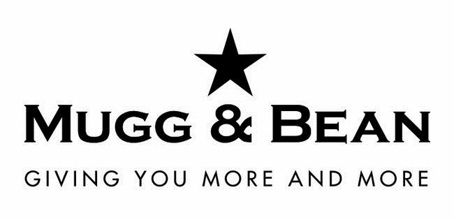
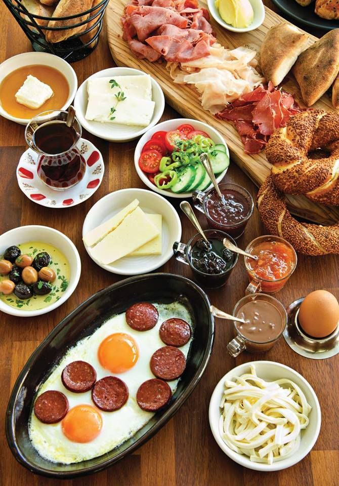

Mugg & Bean is a full-service, and On-The-Move restaurant, coffee-themed franchise restaurant chain originating from South Africa. The restaurant chain was founded in 1996 by Ben Filmalter after a visit to a Chicago coffee shop in the early 1990s inspired him to open a similar restaurant in South Africa. The first restaurant was opened at the V&A Waterfront in Cape Town in 1996. The franchise was bought by Famous Brands in 2009
